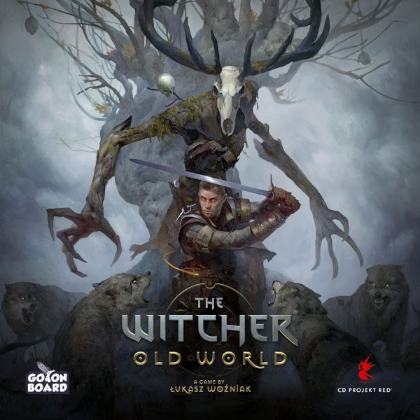
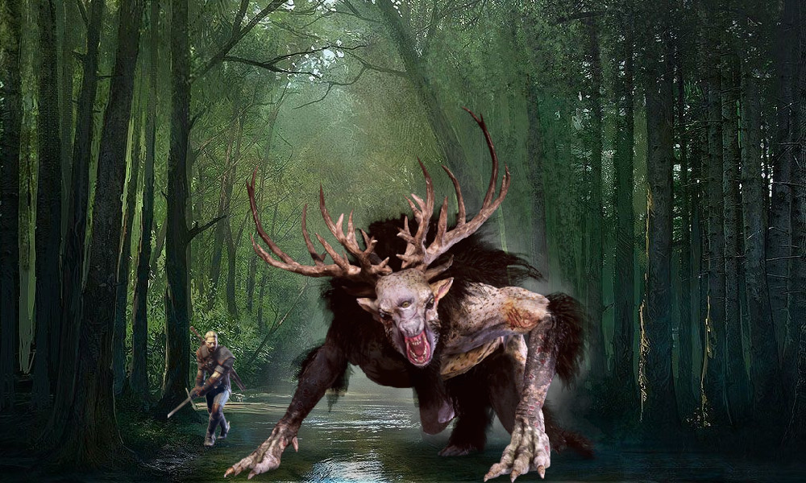
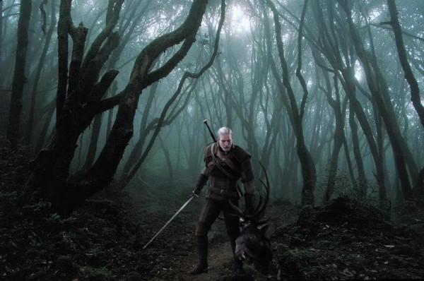
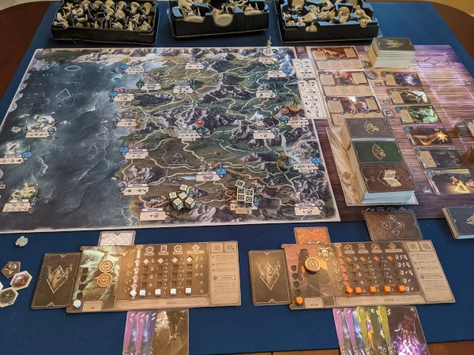

O jogo foi desenhado por Łukasz Woźniak, é um jogo de tabuleiro desenvolvido pela Go on Board em cooperação com a CD PROJEKT RED. O projeto foi anunciado em 10 de fevereiro de 2021 e começou a ser enviado aos patrocinadores no primeiro semestre de 2023 antes de ser disponibilizado aos varejistas em junho de 2023.

A Saga
Em The Witcher: Old World , você se torna um bruxo — um matador de monstros profissional — e mergulha no universo lendário da franquia The Witcher .

Ambientado anos antes da saga de Geralt de Rivia , The Witcher: Old World explora uma época em que monstros vagavam pelo continente em maior número, criando um perigo constante que exigia a atenção de matadores de monstros habilmente treinados, conhecidos como bruxos. Cinco escolas concorrentes, Lobo , Gato , Grifo , Urso e Víbora ou Manticora, treinaram seus adeptos através de regimes brutais e, uma vez totalmente preparados, esses agora reconhecidos bruxos, partiram para explorar a terra, em busca de problemas e aventuras e ajudando outros em troca de dinheiro.

Jogadores
Neste competitivo jogo de tabuleiro de aventura, 2 a 5 jogadores viajam por um vasto mapa, embarcando em missões magistralmente escritas, encontrando e fazendo escolhas morais ambíguas, lutando contra monstros - e às vezes brigando com outros bruxos para defender a honra de sua escola!
O jogo permite que os jogadores construam seus próprios baralhos de cartas, escolhendo entre uma ampla gama de habilidades: ataques, esquivas e magia de combate de bruxos – conhecidas como “sinais”. Através da sinergia de cartas, os jogadores pretendem alcançar combos poderosos à medida que utilizam as habilidades características da sua escola de bruxos em todo o seu potencial. Missões, batalhas e até pôquer de dados permitem que cada jogador ganhe dinheiro, obtenha novos itens e treine suas habilidades.

Vitória
O primeiro jogador a adquirir de 4 a 6 troféus, com o número definido no início do jogo, ganha o jogo instantaneamente. Você pode obter troféus matando monstros, instigando e vencendo brigas caóticas de taverna contra outro bruxo, treinando atributos ao mais alto nível e resolvendo certas missões ao longo de sua aventura.